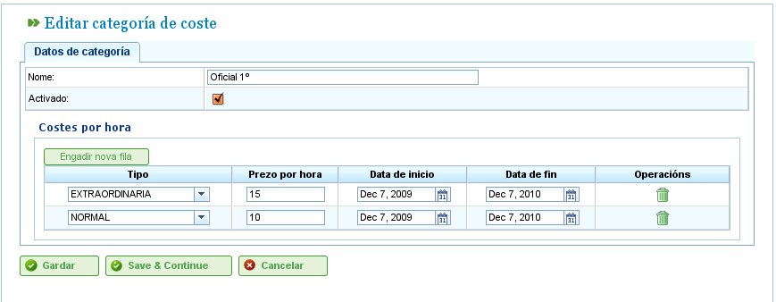

成本管理
成本
成本管理允许用户估算项目中所用资源的成本。若要管理成本，必须先定义以下实体：
- 工时类型： 表示资源的工作工时类型。用户可为机器和工人定义工时类型。例如：「额外工时，每小时€20。」工时类型可定义以下字段：
- 代码： 工时类型的外部代码。
- 名称： 工时类型的名称。例如「额外」。
- 默认费率： 工时类型的基本默认费率。
- 启用： 表示工时类型是否启用。
- 成本类别： 成本类别定义在特定时期（可能是无限期）不同工时类型相关的成本。例如，明年一级技术工人的额外工时成本为每小时€24。成本类别包括：
- 名称： 成本类别名称。
- 启用： 表示类别是否启用。
- 工时类型列表： 此列表定义成本类别中包含的工时类型，并指定每种工时类型的时期和费率。例如，随着费率变化，每年可作为工时类型时期加入此列表，并为每种工时类型设定特定的每小时费率（可能与该工时类型的默认每小时费率不同）。
管理工时类型
用户必须按照以下步骤登记工时类型：
- 在「管理」菜单中选择「管理工作工时类型」。
- 程序显示现有工时类型的列表。

工时类型列表
- 点击「编辑」或「创建」。
- 程序显示工时类型编辑表单。

编辑工时类型
- 用户可以输入或更改：
- 工时类型名称。
- 工时类型代码。
- 默认费率。
- 工时类型启用／停用。
- 点击「保存」或「保存并继续」。
成本类别
用户必须按照以下步骤登记成本类别：
- 在「管理」菜单中选择「管理成本类别」。
- 程序显示现有类别的列表。

成本类别列表
- 点击「编辑」或「创建」按钮。
- 程序显示成本类别编辑表单。

编辑成本类别
- 用户输入或更改：
- 成本类别的名称。
- 成本类别的启用／停用。
- 类别中包含的工时类型列表。所有工时类型具有以下字段：
- 工时类型： 从系统中现有工时类型中选择一个。若不存在，则必须创建一个工时类型（此过程在上一小节中说明）。
- 开始和结束日期： 适用于该成本类别的时期开始和结束日期（后者为选填）。
- 每小时费率： 此特定类别的每小时费率。
- 点击「保存」或「保存并继续」。
将成本类别分配给资源的说明，请参阅资源章节。前往「资源」部分。